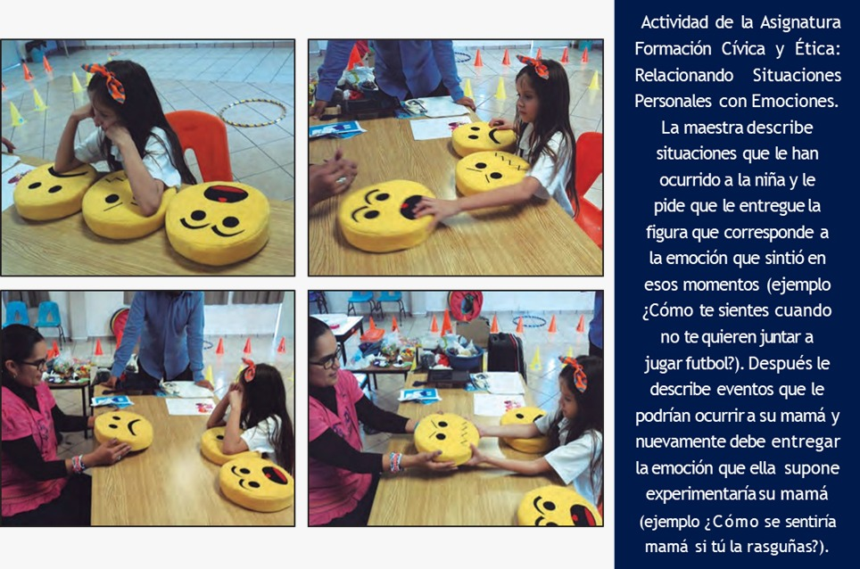

El autismo, o trastorno del espectro autista (TEA), se refiere a una amplia gama de afecciones caracterizadas por dificultades con las habilidades sociales, las conductas repetitivas, el habla y la comunicación no verbal.
En este pequeño cuadro se presenta una pequeña información de ayuda

La palabra «autismo» fue utilizada por primera vez en 1912 por el psiquiatra suizo Eugene Bleuler, en un artículo publicado en el American Journal of Insanity, para referirse a uno de los síntomas de la esquizofrenia o Dementia praecox, un trastorno de muy rara ocurrencia en la infancia Lo construyó a partir del griego αὐτὀς (autos) que significa «uno mismo». En 1925, la psiquiatra infantil soviética Grunia Sujareva publica en ruso la primera descripción detallada de síntomas asociados con esta condición, y un año más tarde la traduce al alemán. Inicialmente utilizó el término «psicopatía esquizoide» (significado en su momento: 'excéntrico'), pero más tarde lo reemplazó con «psicopatía autista» (patológico avoidant) para describir el cuadro clínico de autismo, pero este trabajo pionero cayó en el desconocimiento.ujareva fue la primera en dar importancia a un tratamiento no solo psiquiátrico, sino educativo, familiar y sistémico de las personas con trastornos del espectro autista (TEA), y describió características en ambos géneros, hombres y mujeres utilizó la terminología de Bleuler usando «autista» en el sentido moderno para describir en psicología infantil a niños que no compartían con sus pares, no comprendían los términos «cortesía» o «respeto» y presentaban además hábitos y movimientos estereotipados. Denominó el cuadro «psicopatía autista» La psiquiatra Lorna Wing, madre de una hija autista, introduce el concepto de ‘’espectro autista’’, lo que, a principios de los años 80, va a significar una auténtica revolución en el modo de entender y afrontar el autismo Esta idea fue reforzada por el trabajo de Uta Frith, pionera en gran parte de la investigación actual sobre el autismo Hoy en día está totalmente desechada la hipótesis de las "madres nevera", y aunque la etiología de los TEA no está del todo clarificada, las investigaciones señalan a una condición neurológica con concurrencia de factores genéticos, epigenéticos y ambientales que actúan durante la embriogénesis A partir de 1997, comienzan a publicarse las guías de buena práctica para TEA, que tienen como fin garantizar la calidad científica de las investigaciones, el rigor en el diagnóstico y la ética en las prácticas de intervención en los TEA de acuerdo con los descubrimientos científicos que fueron surgiendo a finales de la década de los 90 y principios del siglo XXI.
Ambos investigadores trabajaron de forma independiente y sus contribuciones sentaron las bases para la comprensión actual del TEA.

Para detectar el autismo se debe observar en el infante los siguientes:

Cuando los padres o cuidadores notan posibles signos de autismo, suelen llevar al niño a un pediatra. El pediatra puede hacer una evaluación del desarrollo, que incluye:
Si el pediatra considera que hay señales de autismo, derivará al niño a un especialista, como un psicólogo infantil o un psiquiatra. Este profesional realiza una evaluación más detallada, que incluye:
| NIVEL DE SEVERIDAD | COMUNICACIÓN SOCIAL | INTERESES RESTRINGIDOS Y CONDUCTA REPETITIVA |
|---|---|---|
| NIVEL 3 Requiere un apoyo muy sustancial |
Déficits severos en habilidades de comunicación social verbal y no verbal que causan alteraciones severas en el funcionamiento, inicia muy pocas interacciones y responde mínimamente a los intentos de relación de otros. Por ejemplo, una persona con muy pocas palabras inteligibles que raramente inicia interacciones sociales, y que cuando lo hace, realiza aproximaciones inusuales únicamente para satisfacer sus necesidades y sólo responde a acercamientos sociales muy directos. | La inflexibilidad del comportamiento, la extrema dificultad afrontando cambios u otros comportamientos restringidos/repetitivos interfieren marcadamente en el funcionamiento en todas las esferas. Gran malestar o dificultad al cambiar el foco de interés o la conducta. |
| NIVEL 2 Requiere un apoyo sustancial |
Déficits marcados en habilidades de comunicación social verbal y no verbal; los déficit sociales son aparentes incluso con apoyos; inician un número limitado de interacciones sociales; y responden de manera atípica o reducida a los intentos de relación de otros. Por ejemplo, una persona que habla con frases sencillas, cuya capacidad para interactuar se limita a intereses restringidos y que manifiesta comportamientos atípicos a nivel no verbal. | El comportamiento inflexible, las dificultades para afrontar el cambio, u otras conductas restringidas/repetitivas, aparecen con la frecuencia suficiente como para ser obvias a un observador no entrenado e interfieren con el funcionamiento en una variedad de contextos. Gran malestar o dificultad al cambiar el foco de interés o la conducta. |
| NIVEL 1 Requiere apoyo |
Sin apoyos, las dificultades de comunicación social causan alteraciones evidentes. Muestra dificultades iniciando interacciones sociales y ofrece ejemplos claros de respuestas atípicas o fallidas a las aperturas sociales de otros. Puede parecer que su interés por interactuar socialmente está disminuido. Por ejemplo, una persona que es capaz de hablar usando frases completas e implicarse en la comunicación pero que a veces falla en el flujo de ida y vuelta de las conversaciones y cuyos intentos por hacer amigos son atípicos y generalmente fracasan. | La inflexibilidad del comportamiento causa una interferencia significativa en el funcionamiento en uno o más contextos. Los problemas de organización y planificación obstaculizan la independencia. |
Primero que nada, mantén la calma.
Existen varias opciones de tratamiento para las personas con Trastorno del Espectro Autista (TEA). Estos tratamientos varían dependiendo de las necesidades individuales, pero algunos de los más comunes son:
Consejos útiles Cree rutinas que funcionen bien para usted y su familia. Muchos padres encuentran que es útil dividir las tareas en pasos claros para que sean más fáciles de entender. Algunas formas de recordar las rutinas son las aplicaciones de teléfono, los calendarios de borrado en seco, los planificadores, las notas Post-it y las libretas de notas. Usted no tiene que crear estas rutinas solo(a) si cree que será difícil o abrumador. Escriba listas de las cosas que necesita. A veces, hacer listas de lo que necesita hacer le ayuda a organizar sus pensamientos. Por ejemplo, si necesita ayuda para hablar con el maestro de su hijo sobre las calificaciones, puede escribir las cosas que le resultan difíciles de hablar con ese maestro. Luego puede llevarle esta lista a alguien de confianza, como su pareja, un amigo, un terapeuta o coordinador del caso, para que le ayude a hacer planes. Conéctese con otros padres en el espectro del autismo. Estar con personas que han pasado por lo mismo que usted puede ser útil. Esto se debe a que los otros padres le pueden decir lo que hicieron que les dio buen resultado. También pueden decirle qué tipo de ayuda recibieron. Tener una comunidad fuerte también ayudar emocionalmente. Las madres en el espectro autista pueden ser más propensas a estar deprimidas antes y después de dar a luz. Usted puede conectarse con otros padres por redes sociales, foros en línea, reuniones en persona y grupos formales de apoyo o de terapia. Usted puede pedir el apoyo de terapeutas, entrenadores, coordinadores de caso u otros profesionales. Algunos padres autistas pueden tener dificultades con el funcionamiento ejecutivo (planificación y organización), las interacciones sociales y el papeleo. Estos problemas pueden dificultarles el trato con los médicos, las agencias gubernamentales y las escuelas de sus hijos. Tener una guía útil para lidiar con estos procesos confusos puede ayudar tanto a usted como a sus hijos. Todos nos comunicamos de forma diferente. Algunas personas en el espectro autista prefieren comunicarse por correo electrónico o por chat en línea. Otras prefieren la comunicación en persona, por chat de video o por teléfono. Dígale a la gente que le brinda apoyo qué clase de comunicación funciona mejor para usted.
Ya sea que conozcas a un estudiante con autismo o que recién estés conociendo a uno, probablemente esta información te resulte útil. Si haces el esfuerzo de incluir, comunicar, comprender y respetar, ambos obtendrán algo de su amistad. Incluir Tome la iniciativa de incluirlo; es posible que él desee desesperadamente que lo incluyan y no sepa cómo pedirlo. Sea específico acerca de lo que desea que haga. Encuentre intereses comunes: será mucho más fácil hablar o compartir algo que a ambos les guste hacer (películas, deportes, música, libros, programas de televisión, etc.). Anímalo a probar cosas nuevas porque a veces puede tener miedo de probar cosas nuevas. No lo ignores, incluso si crees que no te nota. Comunicar Comuníquese con claridad: hable a una velocidad y un volumen razonables. Puede resultar útil utilizar frases cortas. Utilice gestos, imágenes y expresiones faciales para facilitar la comunicación. Hable literalmente: no utilice figuras retóricas confusas (puede que le diga con sinceridad “el cielo” si le pregunta “¿Qué pasa?”). Dar retroalimentación: si tu amigo con autismo está haciendo algo inapropiado, está bien decírselo amablemente. Solo asegúrate de decirle también qué es lo correcto que debe hacer porque es posible que no lo sepa. Tómate el tiempo de saludarlo cada vez que lo veas. Incluso cuando tengas prisa y te cruces con él en el pasillo, decirle "hola" es un gesto agradable. Sea persistente y paciente. Recuerde que su amigo con autismo puede tardar más tiempo en responder que otras personas. Esto no significa necesariamente que no esté interesado. Entender Recuerda la sensibilidad sensorial: tu amigo puede sentirse muy incómodo en determinadas situaciones o lugares (multitudes, zonas ruidosas, etc.). Pregúntale si está bien. A veces puede necesitar un descanso. Descubra cuáles son sus intereses o habilidades especiales y luego trate de encontrar formas de permitirle usarlos. Haz preguntas: si algo que hace tu hijo te resulta confuso, pregúntale a un maestro o asistente. Los niños hacen ciertas cosas por alguna razón. Si la descubres, tal vez puedas ayudarlo. Pídale a alguien de su escuela más información de Autism Speaks. Si tu amigo con autismo está “entrando en pánico”, probablemente sea porque está tratando de comunicar algo, no porque se esté comportando de manera extraña. Es posible que haya algo que realmente lo esté molestando o que tenga miedo o esté frustrado y no pueda comunicarse al respecto. Intenta comprenderlo. Pídele ayuda a un maestro o a otro adulto. Respeto Acepte sus diferencias y respete sus fortalezas tal como lo haría con cualquier amigo. No tengas miedo. Tu amigo es solo un niño como tú que necesita un poco de ayuda. Defiéndelo: si ves que alguien se burla o acosa a un amigo con autismo, toma una postura y dile a esa persona que eso no está bien. No lo molestes. A veces, puede que no entienda la burla o que piense que estás siendo amable cuando en realidad no es así. Si otros niños se burlan de él, llévalos a un lado y diles que dejen de hacerlo. Si te preocupa que lo estén acosando, díselo a un maestro o a un asistente. Sé servicial, pero no demasiado servicial. Si eres demasiado servicial, puede que se sienta diferente. Deja que primero intente hacerlo solo y luego ayúdalo si lo necesita. Pídele que haga cosas contigo, pero no te limites a explicarle lo que debe hacer; enséñale lo que debe hacer para que pueda imitarte. Dile algo cuando haga algo bueno. Puedes animarlo, saludarlo con un “choca esos cinco” o simplemente decirle “gran trabajo”. A él le gusta que lo feliciten, igual que a ti. Está bien que a veces te frustres con él o que quieras jugar solo o con otra persona. Si no te deja en paz después de que se lo pidas amablemente, díselo a un maestro o a otro adulto que pueda ayudarte. Encuentra algo que le guste, una habilidad especial que admires o un interés especial que tenga. Algunos niños con autismo son muy buenos con las matemáticas, la ortografía o las computadoras, o tienen una gran memoria para el horario de clases. ¿Quién sabe? ¡Quizás él te ayude!
La inclusión educativa y social del niño con autismo a en los diferentes estadios formativos requiere del docente conocimientos específicos en Neuropsicología que le permitirán cubrir las necesidades especiales del niño, desarrollar actividades enriquecedoras y trabajar en sintonía con el equipo experto.
El TEA (Trastorno del Espectro Autista) es un trastorno del neurodesarrollo que empieza a manifestarse alrededor de los dos primeros años del niño y se extiende durante el resto de su ciclo vital. Las áreas más afectadas son las capacidades de interacción social y comunicativa y la regulación flexible de sus pensamientos y conductas. Un alumno con TEA no buscará relacionarse con sus iguales; y, si lo hace, su manera de interactuar puede ser inapropiada. Ambas situaciones podrían conllevar al aislamiento y el acoso en el aula de dicho alumno. Otras características del niño con autismo, que interfieren en la inclusión dentro del aula, es la presentación de patrones de pensamiento y movimientos repetitivos (balanceo, cerrar y abrir puertas…), una hiperreactividad ante ciertos estímulos, la dificultad para la comprensión del lenguaje simbólico o para empatizar. No obstante, los síntomas del TEA son muy heterogéneos. No todos los alumnos que sufren autismo manifiestan las mismas alteraciones cognitivo y conductuales, ni en el mismo grado. Por lo tanto, es fundamental que el equipo docente y especializado adapte el programa de intervención atendiendo las necesidades específicas y personales del alumno y potencie aquellos rasgos que beneficiarán su inclusión en la escuela. Para optimizar el proceso de aprendizaje de un niño con autismo las habilidades requeridas en autonomía e integración social, el profesional educativo necesita, a su vez, aprender a evaluar al alumno, valorar su situación en el aula, respetar su ritmo y estilo de aprendizaje y diseñar y poner en práctica adaptaciones curriculares específicas y eficaces para cada uno de ellos. El programa de estudio de la Maestría en Educación Especial responde a esta necesidad de los profesionales de la Educación de conocer todos los tipos de NEE, y de ser capaz de detectar e intervenir sobre las diversas necesidades de aprendizaje de sus alumnos con discapacidad.Para abordar correctamente el autismo en el aula y lograr una buena inclusión del alumno con TEA en las dinámicas de clase, es necesario que el docente respete, valore y comprenda las necesidades de dicho alumnado; que se implique en el trabajo del equipo experto y se muestre flexible en su labor pedagógica, con el único fin de cubrir todas las necesidades del alumno. Entre las actividades y estrategias para niños con autismo que se pueden realizar a favor de la buena adaptación del alumno que sufre TEA, caben destacar: La estructuración del entorno para que sea predecible por parte del alumno y se sienta seguro emocionalmente. La creación de rutinas, así como el diseño de una agenda con pictogramas, fotos o dibujos ayudarán al niño con autismo a anticiparse y comprender la secuencia de las acciones que requiere una tarea; también, a la identificación de las emociones propias y de los iguales. El uso de indicaciones visuales para facilitar las enseñanzas (programa TEACCH) y la incorporación de programas de comunicación y competencia social como el Programa de Comunicación Total, donde se asocian signos a vocalizaciones. Siguiendo la metodología anterior, son de vital importancia los apoyos visuales (historietas, cómics y vídeos) para mejorar la comprensión por parte del alumno de las situaciones sociales e impulsar la imitación de conductas adecuadas. En las fichas de trabajo del alumno también se debe incluir la secuencia de tareas, paso a paso, con claridad y dibujos de que ayuden y faciliten la realización de este tipo de actividades. Por último, se aconseja crear un “círculo de amigos” del entorno al alumno con TEA: un grupo de compañeros que interactúen y le guíen en los entornos más abiertos (el patio, el comedor escolar o durante los cambios de clase). Otro método interesante para aplicar es el ARASAAC (Sistema Aumentativo y Alternativo de Comunicación). Este proyecto de inclusión fomenta el uso de pictogramas para facilitar la evolución del lenguaje y la comunicación mediante el uso de material didáctico con el que, por ejemplo, se enseñan las vocales, las letras del alfabeto, entre otros. Es también recomendable emplear un lenguaje claro y sin expresiones que puedan crear confusión. Así, una vez se tiene la atención del alumno, se debe escapar de ambigüedades en la comunicación y emplear frases directas como “camina”, en lugar de “no corras”. Otra estrategia a aplicar es la de aprovechar las áreas de interés de los alumnos para incluirlo en la enseñanza. Además de ayudar en su desarrollo de habilidades comunicativas, se favorecerá el desenvolvimiento de habilidades sociales. Establecer estrategias de apoyo cuando los alumnos se sientan estresados o incapaces de seguir y crear espacios “seguros” donde se puedan relajarse y calmarse en compañía de alguna persona con la que hayan creado una buena y estrecha relación. Emplear comandos de preparación y ejecución para realizar cambios en el aula ya que los alumnos con autismo suelen tener problemas con las transiciones. Un ejemplo de esta técnica sería usar un comando preparatorio como: “Cuando yo diga la palabra caminar, nos moveremos…” y tras esto se pronuncia el comando ejecutorio, “caminar”. Para ayudar al desarrollo simbólico del alumno con autismo se llevan a cabo actividades con objetos de referencia. Estos se emplean para representar un elemento, una acción, una persona, un lugar, etc., ya que la compresión e identificación de imágenes resulta complicado para ellos. Así, se hace uso en clase de objetos reales y concretos que permiten a los estudiantes identificar y asociar el objeto con la referencia que representa.
E

| Necesidades en el Área | Capacidades a Desarrollar | Necesidades de Aprendizaje |
|---|---|---|
| SOCIAL |
|
|
| COMUNICATIVA |
|
|
| AFECTIVA |
|
|
| SENSORIAL MOTRIZ |
|
|
| INTELECTUAL |
|
|
La organización del cuadro anterior permite reconocer los aprendizajes genéricos que la mayoría de los alumnos autistas necesitan adquirir, así como las capacidades o funciones psico- lógicas que sería necesario desarrollar para agilizar el logro de esos aprendizajes; esta distinción entre desarrollo y aprendizaje es uno de los elementos centrales de la intervención educativa con estudiantes autistas como veremos más adelante. Determinar lo que un estudiante con autismo necesita aprender y desarrollar apenas re- presenta el primer paso en la construcción de una PCA, al hacerlo se está respondiendo a la pregunta “qué enseñar” pero también es indispensable definir “el cómo”, lo que implica especificar algunas estrategias generales que serán necesarias para conseguir esos aprendizajes y capacidades. Para ejemplificar cómo la información obtenida en la EP puede transformarse en estrategias educativas, a continuación se muestra un cuadro que indica de manera sintética al- gunas de las funciones afectadas en la mayoría de los chicos con autismo y las estrategias que se necesitan aplicar para compensar dichas dificultades.
| DIFICULTADES EN | NECESIDAD DE |
|---|---|
| Senso-Percepción |
|
| Atención |
|
| Memoria |
|
| Motivación |
|
| Imitación |
|
| Iniciativa |
|
| Generalización |
|
Nuevas Tecnologías Electrónicas (Dispositivos y Aplicaciones). Un elemento renovador y con un potencial enorme para el tratamiento educativo de las personas con Trastorno del Espectro Autista está constituido por los nuevos Dispositivos y Aplicaciones Electrónicas (APPs) que se han desarrollado recientemente. Estos recursos tecno- lógicos pueden apoyar el Aprendizaje y el Desarrollo de los Alumnos desde edades tempranas, y tienen la ventaja de ser sumamente atractivos y excepcionalmente útiles para la mayoría de las personas con autismo. Muchos niños pequeños con TEA muestran habilidades sorprenden- tes para manejar dispositivos electrónicos como teléfonos celulares, tablets, PC´s, consolas de videojuegos, laptops y ciertos juguetes electrónicos sin haber recibido a veces la más mínima instrucción. Las aplicaciones electrónicas actuales son tan versátiles que pueden utilizarse para apoyar la adquisición de los aprendizajes en todos los Campos de Formación en que está organizada la Educación Básica y todas las asignaturas. Estos recursos no son sólo de utilidad para los maestros de educación especial, existen programas computacionales que pueden también apoyar el trabajo de los psicólogos, los especialistas en comunicación, fisioterapistas, psicomotricistas y trabajadores sociales. Con éstos dispositivos y sus aplicaciones puede apoyarse el aprendizaje de las matemáticas, el español, la formación cívica, las ciencias naturales, la historia, la educación física e incluso la educación artística; además promueven el desarrollo de procesos intelectuales, psicomotrices, sensoriales, afectivos, sociales y comunicativos/lingüísticos. Es muy importante que los educadores tomen en cuenta las siguientes consideraciones al implementar estrategias basadas nuevas tecnologías: (a) los programas digitales sólo deben utilizarse si se les ha definido un propósito educativo específico, no es recomendable descargar cualquier tipo de juego de moda y luego usarlos sólo para distraer o entretener a los alumnos, (b) ninguna aplicación sustituye el papel mediador del maestro, el trabajo con estas tecnologías implica siempre la planeación e intervención de los docentes. Todo maestro o especialista que atienda en la actualidad alumnos con autismo tiene la responsabilidad profesional de actualizarse para poder utilizar las nuevas tecnologías, y adquirir las habilidades digitales necesarias para su implementación (revisar el capítulo 5 para ver todas las aplicaciones).

Las personas con autismo tienen graves dificultades para traducir las expresiones negativas en afirmativas, por eso muchas veces no obedecen las órdenes y dan la impresión de ser oposicionistas, indisciplinados o desafiantes. En el desarrollo normal de la comprensión del lenguaje verbal, los niños logran entender las expresiones negativas transformándolas en afirmaciones desde los 2 años de edad, comprenden por ejemplo que la orden “no grites” significa que debe bajar el volumen de su voz, o que la indicación “no agarres ese juguete” significa “déjalo en su lugar”, sin embargo las personas con TEA siguen presentando esta dificultad durante toda su vida, si bien su situación tiende a mejorar con el tiempo. Por esta razón lo apropiado es utilizar siempre indicaciones positivas limitando al máximo el uso de la palabra “no”. Cuando una persona con autismo recibe una instrucción que le impide hacer algo, encuentra muy difícil deducir lo que se espera de ella.
| Situación | Lo que se debe decir | Hay que evitar decir |
|---|---|---|
| Una maestra coloca material en la mesa para elaborar una bandera pero inmediatamente el alumno con autismo empieza a manipular el material sin permiso. | “Agarra la mesa con tus dos manos” o “mete tus manos a las bolsas del pantalón” (observe que ambas consignas son afirmativas e impiden que el niño tome el material). | “No toques el material hasta que yo te diga” |
| Un niño con autismo sale corriendo del salón sin permiso y sin rumbo definido. | “Pedro detente junto a ese árbol” o “Pedro ven y dame la mano” | “¡¡No corras!!” o “¡Te vas a caer!” |
| Un estudiante autista tira comida en el suelo. | “Recógelo y échalo en el bote de basura”. | “No tires la comida” o “Eres un sucio” |
| Una persona con autismo encuentra algo de comer en el piso e intenta llevárselo a la boca. | “Ponlo en la basura” o estirar la mano y decir “dámelo”. | “No te lo comas” |
Debe usarse reglas consistentes y neutrales. Los reproches tienen poco sentido para los alumnos autistas y no efectúan ningún cambio en su comportamiento Ejemplo: decir “Recuerda que la bicicleta sólo se usa en la banqueta (acera) “y evitar: “¿cuántas veces te he dicho que no te bajes a la calle?”. Ejemplo: decir “Cada que pises el suelo debes ponerte los zapatos” y evitar: “te vas a enfermar y voy a tenerte que llevar al médico otra vez”.
Las amenazas son una manera negativa de anunciar consecuencias; con frecuencia dan paso a una reacción emocional adversa. En cambio cuando las proposiciones condicionales se comunican a los alumnos a través de instrucciones concretas y consecuencias reforzantes, por lo general se obtienen respuestas más rápidas y con menores niveles de oposición. Ejemplo: es mejor decir “busca tu dinero, entonces iremos a la tienda”. Evitar decir: “si no vas a buscar el dinero no puedes ir a la tienda”. Ejemplo: es mejor decir “quédate sentado un momento, entonces saldremos al re- creo”. Hay que evitar “si no te estás quieto perderás el descanso”.
Esto lo puede hacer a través de juegos, por ejemplo, cuando juegan a armar una torre: primero el niño pone un cubo, después usted otro, después el niño, después usted... También puede enseñarle turnos de manera verbal, diciéndole “tu turno”, “te toca”. Además puede usar gestos, como por ejemplo: sonreír, abrir bien los ojos, abrir las manos, etc.
Esta estrategia consiste en agregar más información a la que el niño o niña proporciona. Por ejemplo, si dice: “ma” para referirse a la mamá, dígale “Mamá”; si el niño dice “Deme”, dígale “Deme galleta”; si el niño señala el carro, usted señale y diga “carro”. El aumento de información debe utilizarse de manera frecuente y en diferentes oportunidades: -Dentro de la rutina o las actividades naturales que se le presenten. -Cuando el niño/a muestre interés por algo. -Cuando suceda algo fuera de lo común. -Cuando las cosas salen mal.
Frecuentemente los estudiantes que presenten TEA no alcanzan a conceptualizarse como pertenecientes a un grupo, por lo cual suelen no comprender que las instrucciones y comentarios dirigidos a “todos” también lo impliquen a él. Por esta razón es conveniente que los profe- sores expresen instrucciones colectivas e inmediatamente después dirijan sus comentarios al niño en particular. Ejemplo: “todos saquen su libro de matemáticas… Ana saca tu libro de matemáticas, está en tu mochila”. Ejemplo: “Todos pueden salir a descansar…. Susana sal del salón, es tiempo de des-cansar”.
Un reforzador verbal, es toda expresión lingüística que se aplica de forma inmediata a la conducta de un sujeto y que provoca un aumento en la frecuencia de esa respuesta. Desgracia- damente muchas de nuestras expresiones de reconocimiento, afecto, aprobación o alabanza pasan desapercibidas para la gran mayoría de los niños con autismo, parecieran carecer de esa propensión natural que tenemos los humanos para sentirnos contentos con las señales de aprobación que recibimos de los demás, no obstante esto no quiere decir que sea imposible desarrollar en ellos el gusto por recibir estimulación verbal positiva, lo que significa es que hay que enseñarlos a ser susceptibles a recibirla y sentirse bien por ello. Los procedimientos más eficaces para desarrollar susceptibilidad a la estimulación social positiva son la contraimitación (sugerida por la psicología del desarrollo) y la técnica de reforzadores condicionados propuesta por la perspectiva conductista, ambas técnicas serán abordas más adelante en este artículo. Cuando un educador desconoce las peculiaridades comunicativas de los niños con autismo, corre el riesgo de enrolarse fácilmente en dinámicas de mutua incomprensión: Se observará por ejemplo a un profesor tratando inútilmente de “motivar” las conductas más adaptativas de los niños mediante lecciones verbales de moral (“¿ves que cuando eres bueno te juntamos en todos los juegos?”). Podrá verse a otro maestro fracasar al intentar aumentar el buen desempeño académico de un alumno autista pidiendo a los demás compañeros un aplauso o una “porra” cada vez que el niño realiza adecuadamente alguna tarea, aunque éste permanezca indiferente a todos estos estímulos. Otro educador tratará en vano de incrementar la permanencia en las actividades de sus alumnos con autismo otorgándoles palabras de “aliento” como ¡eso!, ¡muy bien!, ¡excelente!,etc., aunque para ellos esas expresiones carezcan de todo significado gratificante. Con los ejemplos anteriores no queremos afirmar que los maestros deban prescindir del uso de la palabra como herramienta motivacional, sino que es necesario iniciar procedimientos que enseñen a los alumnos autistas a responder a estímulos lingüísticos reforzantes y a comprender su significado.
Para obtener más información sobre el autismo, consulte las siguientes fuentes: